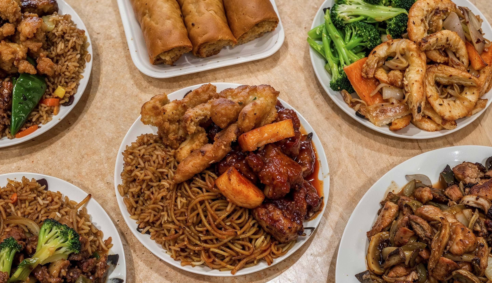

Sabores de China
Sabores de China
Pollo Agridulce

Ingredientes
- 500 g de pechuga de pollo en cubos
- 1 pimiento rojo y 1 verde en trozos
- 1 taza de piña en cubos
- 1/2 taza de ketchup
- 1/4 taza de vinagre blanco
- 3 cucharadas de salsa de soya
- 3 cucharadas de azúcar
- 2 cucharadas de fécula de maíz
- 1 taza de agua
- Aceite para freír
- Sal y pimienta al gusto
Preparación
- Sazona el pollo con sal y pimienta. Fríelo en aceite caliente hasta dorar y reserva.
- En una sartén grande, saltea los pimientos por unos minutos.
- Agrega la piña y mezcla bien.
- En un recipiente aparte, mezcla la ketchup, vinagre, salsa de soya, azúcar, fécula de maíz y agua.
- Vierte la mezcla en la sartén y cocina hasta que espese ligeramente.
- Agrega el pollo frito, mezcla bien y cocina unos minutos más.
- Sirve caliente, acompañado de arroz blanco.
← Volver a Recetas